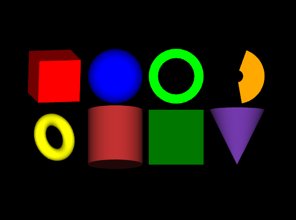

Introduction
This article explains how my HTML 3D Library supports 3D shapes and how to use the library to create shapes, both built-in and custom shapes.
Visit the library's Releases page for the latest version. As of version 1.2.1, it includes the shapes.html and platonic.html demos mentioned in this article.
Creating Shapes
The HTML 3D library contains several methods for creating 3D shapes such as cubes, cylinders, spheres, and custom shapes.

Demos:
- shapes.html - Demonstrates the built-in shapes.
- platonic.html - A demo featuring the five platonic solids. Demonstrates how vertex and index arrays are built up to create geometric meshes.
Built-In Shapes
The Meshes class includes several handy methods for creating built-in shapes.
All methods described below return a Mesh object that describes the triangles they
are composed of. See "Custom Shapes" below for more on meshes.
3D Figures:
- Meshes.createBox() - Creates a cube or box.
- Meshes.createCylinder() - Creates a cylinder or cone, not including the base or top.
- Meshes.createClosedCylinder() - Creates a cylinder or cone, including the base or top.
- Meshes.createTorus() - Creates a torus (doughnut shape).
- Meshes.createSphere() - Creates a sphere.
- Meshes.createCapsule() - Creates a capsule shape.
2D Figures:
- Meshes.createDisk() - Creates a circular disk or a regular polygon, possibly with a hole in the middle.
- Meshes.createPartialDisk() - Creates a portion of a circular disk, possibly with a hole where the middle of the complete disk would be.
- Meshes.createPlane() - Creates a rectangle.
Custom Shapes
Also included is a Mesh class for defining shapes not given among the built-in ones.
Shapes can consist of triangles, lines, or points.
There are two ways for specifying shapes: through the Mesh constructor, or through methods that specify the mesh's data vertex by vertex.
The Mesh Constructor
The Mesh constructor lets you define a shape from a predefined array of vertex data. Here's how.
(1) Create an array of numbers giving the X, Y, and Z coordinate for each vertex:
var vertices = [x1, y1, z1, x2, y2, z2, ... ];If you also specify normals, colors, or texture coordinates for each vertex, you must add them after each vertex position in this order: normals first, colors second, and texture coordinates last. If you don't specify normals, colors, and/or texture coordinates per vertex, you can omit them. The following are examples of this:
// An array of vertices each with a set of normals
var vertices = [
x1, y1, z1, nx1, ny1, nz1,
x2, y2, z2, nx2, ny2, nz2,
...
];
// An array of vertices each with a set of colors
// and texture coordinates
var vertices = [
x1, y1, z1, cr1, cg1, cb1, u1, v1,
x2, y2, z2, cr2, cg2, cb2, u2, v2,
...
];(2) Create a second array of numbers giving the indices to vertices defined in the previous step:
var indices = [0, 1, 2, 1, 2, 3, ... ];Each index refers to the (n+1)th vertex, no matter how many array elements each vertex consists of (a vertex with just coordinates will use 3 array elements).
If you are defining a set of triangles, there should be 3 indices for each triangle, and if you are defining a set of line segments, there should be 2 indices for each line segment.
(3) Call the mesh constructor with the vertex and index arrays.
var bits = Mesh.NORMALS_BIT; // Assumes we used the vertex array with normals
var mesh = new Mesh(vertices, indices, bits);Note that you must include a set of bits indicating what kind of data the vertex array contains. (If none of the bits apply, use 0 or omit the "bits" parameter.) The bits are:
Mesh.NORMALS_BIT- if you included normals for each vertex (3 elements)Mesh.COLORS_BIT- if you included colors for each vertex (3 elements)Mesh.TEXCOORDS_BIT- if you included texture coordinates for each vertex (2 elements)Mesh.LINES_BIT- if the mesh defines a set of lines rather than trianglesMesh.POINTS_BIT- if the mesh defines a set of points (you can't set bothLINES_BITandPOINTS_BIT).
The bits may be combined as in the following example:
var bits = Mesh.NORMALS_BIT | Mesh.COLORS_BIT;Alternatively, you can call the Mesh constructor with no arguments:
var mesh = new Mesh();Doing so will create a mesh with no vertices.
Vertex Methods
Alternatively, or in addition, to the method described above, you can specify the mesh's shape by calling methods that give each vertex's position and parameters:
(1) Call the mode() method and choose a primitive mode, such as Mesh.TRIANGLES
or Mesh.QUAD_STRIP:
mesh.mode(Mesh.TRIANGLES);The mesh will build up the shape from the vertices you give it depending on the mesh's
primitive mode. For example, QUAD_STRIP defines a strip of connecting quadrilaterals,
and TRIANGLES defines a set of triangles that are not necessarily connected:
Mesh.TRIANGLES- Set of triangles, 3 vertices each.Mesh.LINES- Set of line segments, 2 vertices each.Mesh.QUADS- Set of quadrilaterals, 4 vertices each.Mesh.TRIANGLE_STRIP- A triangle strip. The first 3 vertices make up the first triangle, and each additional triangle is made up of the last 2 vertices and 1 new vertex.Mesh.TRIANGLE_FAN- A triangle fan. The first 3 vertices make up the first triangle, and each additional triangle is made up of the last vertex, the first vertex of the first trangle, and 1 new vertex.Mesh.QUAD_STRIP- A strip of quadrilaterals (quads). The first 4 vertices make up the first quad, and each additional quad is made up of the last 2 vertices of the previous quad and 2 new vertices.Mesh.LINE_STRIP- A series of points making up a connected line segment path.Mesh.POINTS- A series of points.
(2) Call the normal3(), color3(), and texCoord2() methods, as needed, to set the
next vertex's parameters. You don't need to do this for each vertex if multiple
consecutive vertices will share the same normal, color, or texture coordinates.
mesh.normal3(2, 3, 4); // Set the x, y, and z of the normal.
mesh.color3(0.1,0.6,1); // Set the red, green, and blue of the color.
mesh.color3("red"); // Set a CSS color.
mesh.color3("#123FE8"); // Set an HTML color.
mesh.texCoord3(0.5,0.5); // Set the texture coordinates.(3) Call the vertex3() method to add a new vertex and set its position. The vertex will
have the last normal, color, and texture coordinates defined on the mesh, if any
were given:
mesh.vertex3(x, y, z);You can also call the mode() method any time to change the primitive mode, even to
the same mode. What this does is reset the state of the primitive so that future vertices
won't depend on previous vertices. For example, if you define a TRIANGLE_FAN, and
you call mesh.mode(Mesh.TRIANGLE_FAN), the newly defined TRIANGLE_FAN will be
"disconnected" from the previous one as far as the mesh object is concerned.
Transforming the Mesh
Once you've created the mesh, you can use the transform() method to transform
all the vertices in the mesh with a 4x4 matrix. The
shapes.html demo uses
this method to adjust some of the meshes to make them look better on the screen.
Example:
var matrix = GLMath.mat4scaled(2,2,2);
// Use the transform to double the mesh's size
mesh = mesh.transform(matrix);Normals
For lighting and shading to work correctly, you must specify normals for all the vertices in the mesh.
What Are Normals?
A normal is a set of 3 numbers describing a particular direction. Generally, a normal's direction is perpendicular to a surface's edges, and points away from the surface.
Normals are important in the lighting and shading model. When light hits an object's surface, the surface will shine depending on how directly the light points to the surface. It will shine the most if the light is directly opposite to its normal, and not at all if the light is perpendicular to the normal or in the same direction as the normal.
Normals on Built-in Shapes
The Meshes class includes built-in methods that will automatically
specify the proper normals.
recalcNormals()
You can use the recalcNormals() method to recalculate the mesh's normals,
in order to give the shape a flat or smooth appearance or to shade the shape from
the inside or the outside. This method takes two parameters:
- The first parameter is true if the normals will be calculated such that the shape will have a flat appearance; otherwise, false (giving the shape a smooth appearance). This works by either giving each triangle the same normal (flat shading) or giving each unique vertex its own normal (smooth shading).
- The second parameter is true if the normals will be calculated such that the shape is shaded from the inside; otherwise, false.
Remember, for normal calculation to properly affect shading, each triangle in the mesh must have its vertices defined in counterclockwise order.
Example:
// Use flat shading, and shape is shaded from the outside
mesh = mesh.recalcNormals(true, false);
// Both parameters can be omitted, setting both to false
mesh = mesh.recalcNormals();Binding Shapes
Once you have a mesh of a 3D shape, you still need to bind it to the 3D scene
in order to have it drawn. This is where the Shape class comes into
play; this class associates a 3D mesh with its location and orientation in the scene,
as well as its color and appearance. To attach a mesh to a 3D scene:
(1) Create a Shape object by passing the mesh to the 3D scene's makeShape() method:
var shape = scene3d.makeShape(mesh);(2) You may also set the Shape's color, appearance, and position, using the examples below:
Examples for setting appearance:
shape.setColor("red"); // set the color to a CSS color
shape.setColor("#338845"); // set the color to an HTML color
shape.setColor(0.2,0.5,1); // set the color to its RGB values, each from 0 to 1
// set material parameters: ambient, diffuse,
// specular, shininess (NOTE: if the mesh defines its own colors they
// will override ambient and diffuse reflection given below)
shape.setMaterial(new Material("blue","blue","white",30));
// set material parameters: ambient, diffuse,
// specular, shininess, emission
shape.setMaterial(new Material("lime","lime","white",30,[0.2,0.2,0.2]));
// set a texture; this requires the mesh to have texture
// coordinates assigned to each vertex
shape.setMaterial(new TextureMaterial("texture.png"));Examples for setting position:
// move the shape 2 units along X axis, 4 units along Y axis,
// and 5 units along Z axis
shape.setPosition(2,4,5);
// same, but passing an array
shape.setPosition([2,4,5]);
// rotate the shape 40 units about X axis, 20 units about Y axis,
// and 50 units about Z axis
shape.setQuaternion(GLMath.quatFromTaitBryan(40,20,50));
// rotate the shape 20 units about Y axis
shape.setQuaternion(GLMath.quatFromAxisAngle(20,0,1,0));
// scale the shape by 2x in all axes
shape.setScale(2,2,2);
// same, but passing an array
shape.setScale([2,2,2]);If setMatrix wasn't called, then when the shape is rendered, it will generate a transformation matrix that has the effect of scaling, then rotating, then translating (shifting) the shape in 3D space.
(3) Add the shape to the 3D scene:
scene3d.addShape(shape);Now, the next time scene3d.render() is called, the Scene3D will render the
given shape to the scene.